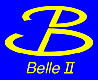
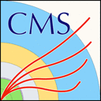

Who uses Scikit-HEP?
Experiment collaborations

BelleII - the Belle II experiment at KEK, Japan.

CMS - the Compact Muon Solenoid experiment at CERN, Switzerland.
Phenomenology projects
flavio - flavour physics phenomenology in the Standard Model and beyond.
Software projects
The zfit project - it provides a model fitting library based on TensorFlow
and optimised for simple and direct manipulation of probability density functions.